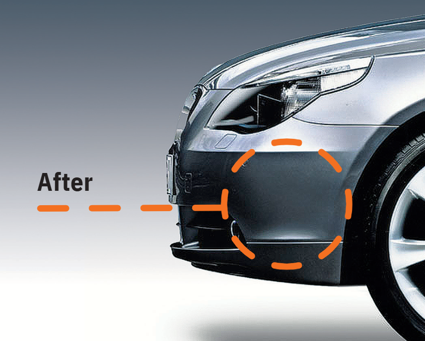
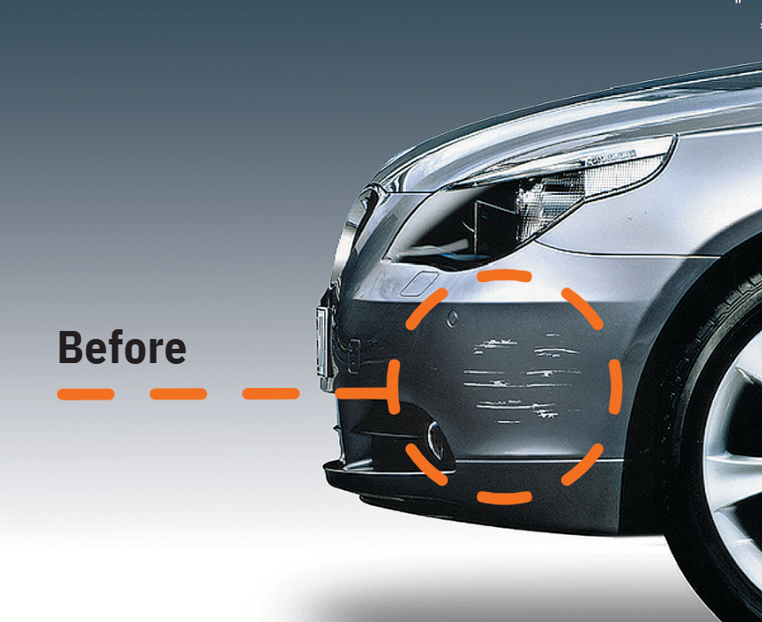
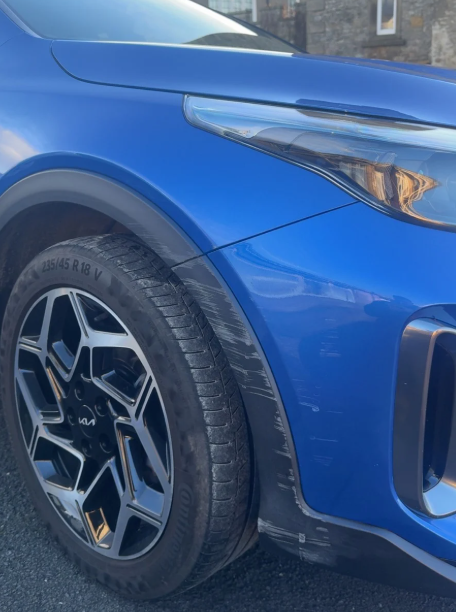
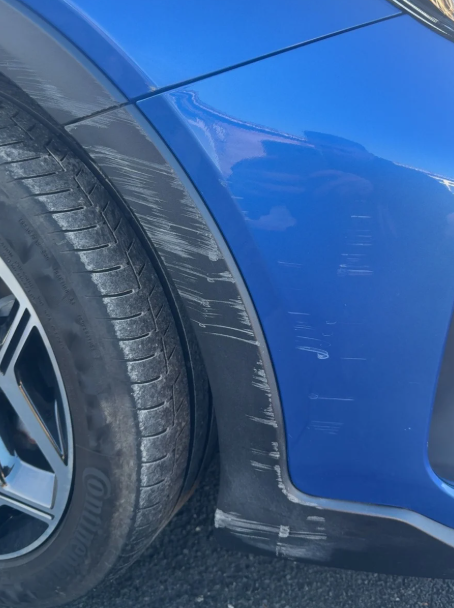
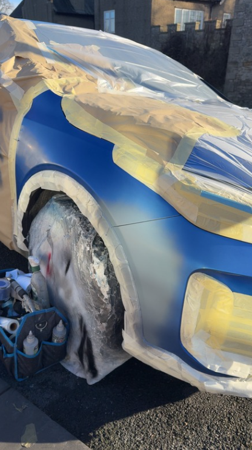
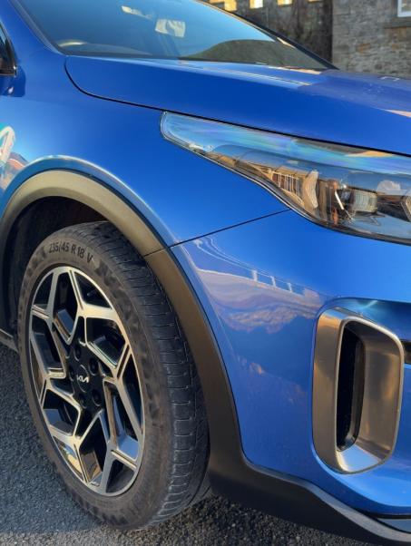
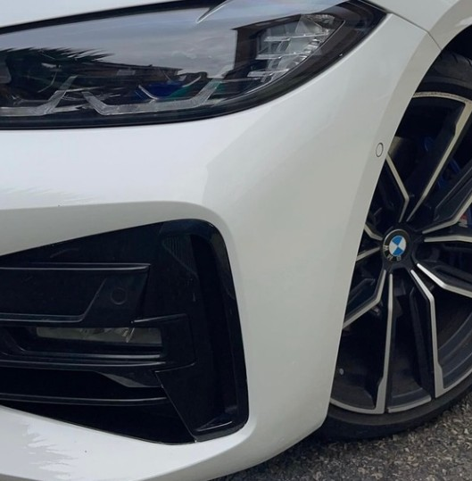
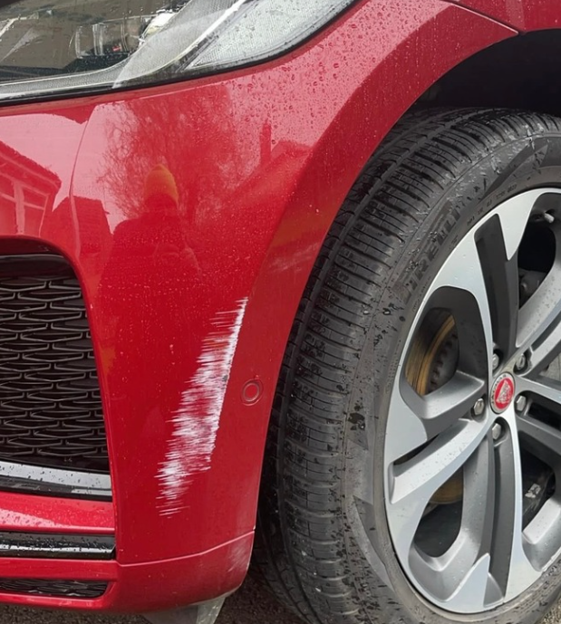
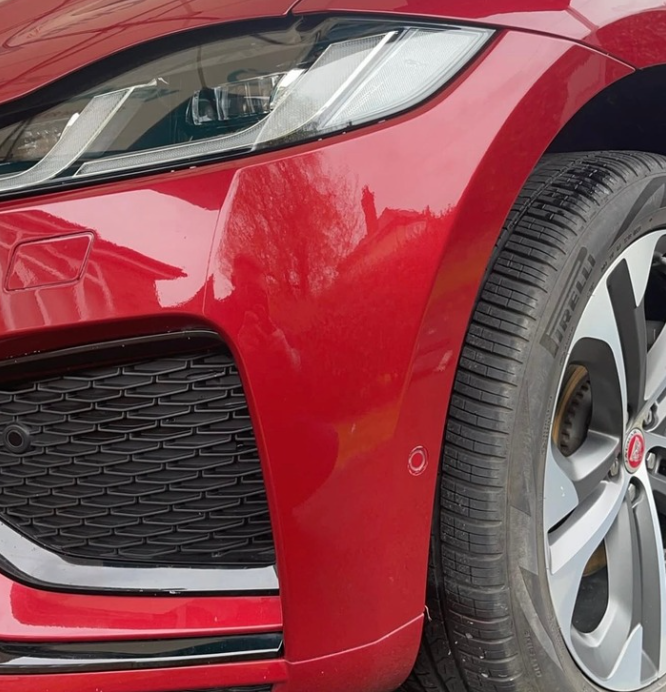

Typical bumper damage – Before

Same bumper after professional repair

Deep side scratches – ready for repair

Front arch scuffs & curb rash

Mid-repair – colour match & painting

Wheel arch & rim scuffs removed

BMW front corner repair - Before

BMW side panel damage - After

Jaguar front end scuffs - Before

Jaguar bumper close-up – After